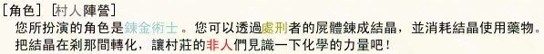

參加遊戲時非常重要的事情
「關於遊戲中的內容請不要在遊戲以外的場合進行討論。」
如果這樣做的話遊戲將會變得沒有意思了。
特別是當自己死亡之後把其他人的職業公開出來，請絕對不要有這種行為。
如果這樣做的話遊戲將會變得沒有意思了。
特別是當自己死亡之後把其他人的職業公開出來，請絕對不要有這種行為。
「汝等是人是狼？」的基本規則
[遊戲目的]
在某個村子，有著人類與人狼共同生活的村子。
但隨著時間經過，長生的人狼眼見快被人類所懷疑，認為時機已到，開始於晚上襲擊人類。
村民們便每天集合眾人於集會所進行討論，決定以一天一人的方式，將可疑的人進行處刑。
村民以守護村子為目的，人狼以吃光人類為目的，還有不知道從哪來的妖狐在旁窺測。
善良的天使感到失望決定成為惡魔將一切毀滅殆盡，教主則想趁此機會將村莊納為己有。
各種不同職業擔當的玩家們必須絞盡腦汁，使處刑的話題朝著對自己有利的形式發展。
但隨著時間經過，長生的人狼眼見快被人類所懷疑，認為時機已到，開始於晚上襲擊人類。
村民們便每天集合眾人於集會所進行討論，決定以一天一人的方式，將可疑的人進行處刑。
村民以守護村子為目的，人狼以吃光人類為目的，還有不知道從哪來的妖狐在旁窺測。
善良的天使感到失望決定成為惡魔將一切毀滅殆盡，教主則想趁此機會將村莊納為己有。
各種不同職業擔當的玩家們必須絞盡腦汁，使處刑的話題朝著對自己有利的形式發展。
[勝利條件]
- 村民的勝利
將人狼、妖狐全部消滅。 - 暴民的勝利
村民的勝利時，若存在唯一一位，或存活者皆為暴民時則獲勝。 - 人狼的勝利
將妖狐殺光，並使村民的數量和人狼的數量相同或是更少。 - 妖狐的勝利
村民或人狼的勝利時，若妖狐存活則為妖狐的勝利。 - 戀人、墮天使的勝利
遊戲結束時若生存則與獲勝陣營共同享有勝利。
※墮天使無法成為教派的一員。 - 惡魔的勝利
先被人狼襲擊成功後，再被表決處死，便能完成儀式，毀滅村莊，變為惡魔的勝利。 - 企鵝的勝利
若有三人被企鵝凍死則引發強烈的異常氣候，變為企鵝的勝利。
若教主替換【GM:教】選項開啟且模仿師成為企鵝時則條件提升至5人。 - 教派的勝利
生存者皆為教派的一員時，為教派的勝利。
※隱士的神隱等同排除村莊外，故神隱時不會阻礙教派的勝利。 - 逃亡者的勝利
比照村民的勝利。
若逃亡生存意志[逃4]選項開啟則勝利條件額外增加自己生存一項。 - 繼承者的勝利
比照村民的勝利，繼承成功後比照繼承後的職業。
若繼承中立模式[繼2]選項開啟則繼承成功前的勝利條件更改為遊戲結束時若生存則與獲勝陣營共同享有勝利。
您是否存活下來並不是您玩這個遊戲的目的。
就算自己犧牲了，您的隊伍勝利的話則您也屬於勝利者。
就算自己犧牲了，您的隊伍勝利的話則您也屬於勝利者。
[職業的所屬陣營]
村子裡面有著特殊的能力者和思想異常的人存在。
- 村民陣營
村民、占卜師、靈能者、獵人、共有者、牧師、藥師、埋毒者、逃亡者、學者、大魔導、卡片師、隱士、鍊金術士、繼承者（繼承成功前） - 暴民陣營
暴民 - 人狼陣營
人狼、幼狼、狂人、間諜、狂巫 - 妖狐陣營
妖狐、背德、哥德法 - 惡魔陣營
惡魔、異端 - 企鵝陣營
企鵝 - 教派陣營
教主、教徒 - 不定陣營
模仿師、繼承者 - 中立陣營
繼承者（繼承中立模式[繼2]選項開啟且繼承成功前）、墮天使、戀人
[職業介紹]
在此介紹有登場的職業。
| 職業 | -- 説明 -- |
|---|---|
| 村民 |
身為村莊中最普通的一份子，您並沒有特殊的能力。 或許您其實是有能力的…可是您現在一點印象都沒有。 不論如何，靠您的智慧與勇氣應該是可以拯救這個村莊的。 擴充選項：
|
| 占卜師 |
透過占卜的能力，晚上可以對一名村民占卜，隔日早上可以得知對方是人類還是人狼。 因為只能判斷種族是否為人狼，所以狂人等內心並非村人立場的狀況您沒有辦法判斷出來。 雖然占卜妖狐會判斷為人類，但妖狐被占卜的能力接觸會死亡，因此殺害妖狐也是您重要的目的之一。 您手中掌握著村民的勝利希望！ |
| 靈能者 |
透過感知的能力，您可以於早上得知昨天的處刑者是人類還是人狼。 除了人狼，您也能判斷出惡魔，而且暴斃者也是您的感知範圍內。 面對村莊的混亂，您較能清楚的掌握現在的局面。 擴充選項：
|
| 獵人 |
從殺人事件發生的第二天開始，您可以於晚上選擇一名村民進行護衛，將襲擊的人狼擊退，使之不被殺害。 但若您自身被人狼襲擊，您仍會身亡。 您必須預判人狼的行動，盡力保護村民的性命。 擴充選項：
|
| 共有者 |
擁有特殊的能力，您可以感應到同樣擁有該能力的同伴。 就算距離遙遠也可以得知同伴的想法並於晚上藉此交流。 在有同伴的情況下您通常比較容易取得村民的信任。 擴充選項：
|
| 牧師 |
村莊的牧師，察覺到似乎有人開始正在進行惡魔的儀式， 為了避免村莊被毀滅，當惡魔儀式的進度有所進展，您會立刻得知。 您可以將惡魔儀式的進度公開並藉此警告眾人。 當惡魔被成功襲擊，儀式進度完成一半之後，您可以於晚上對任一人施展祝福，隔日對象的獲得票數 - 1，天氣為雪時無效。 第二天晚上起，您可以決定是否施展聖域術，只要當晚人狼、幼狼的襲擊有成功，聖域術便會發動，讓牧師代替人狼襲擊的對象犧牲，但是對惡魔被襲擊沒有效果。 擴充選項：
|
| 藥師 |
您身上持有著治療藥和毒藥各一瓶， 第二天晚上起，您可以對任一人選擇使用治療藥或毒藥。 您的治療藥可以用在當晚被人狼襲擊的對象，快速恢復並維持對象的性命，但對妖狐和惡魔沒有效果，對象也不會有任何自覺。 您的毒藥則是可以確實地毒殺任何對象，絕不可能活下去。 雖然使用失敗並不會讓藥消失，但只要使用成功，藥就會沒了。 擴充選項：
|
| 鍊金術士 |
藥師的進階職業，藥師於第一天拋棄持有藥物可以成為鍊金術士。 身為藥師的您，決定放棄原先的藥師職業，改靠副業－鍊金術為生。 藥師轉為鍊金術士的同時會將原本持有的治療藥與毒藥鍊成為風結晶和地結晶。 此外，從第三天開始，可以從被處刑者的屍體，根據對方職業的陣營，獲得不同屬性的結晶。 （以主職業正常情況的陣營為準，副職業與戀人不會影響，例：狂人狐信者→火結晶，但狼印者是唯一的例外。）
因為鍊成結晶是相當費力的事情，所以一旦獲得新的結晶（手上沒有的），隔日白天就必須休息，無法再次鍊成（獲得）結晶。 消耗風與水結晶，可以使用治療藥，消耗火與地結晶，可以使用毒藥。 因為鍊金術是相當複雜的一門學問，所以模仿師模仿鍊金術士時只能成為藥師。 |
| 埋毒者 |
您的體質異於常人，您的體內有著少量的毒。 雖然您自己因為抗體的關係而不會有任何影響，但觸碰到您血液的人聽說會馬上死亡。 您被處刑時，會因為血液四濺而隨機令任一人連帶死亡。 您被人狼襲擊時則是隨機毒殺任一名人狼。 |
| 逃亡者 |
殺人事件發生後，揮之不去的恐懼纏繞著您，令您一直無法安枕好眠。 從第二天晚上起，您決定往任一名生存者的家中避難。 因為您不在自己家的關係，所以人狼襲擊您會找不到人，相對的獵人與牧師並無法直接保護您。 但是人狼若襲擊您所逃往的住處，或是您逃亡到人狼或幼狼家中，您將會死亡。 因為只顧著逃亡的關係，您沒有那個閒暇去寫遺書，同時也不會注意到人狼是否狂暴化。 擴充選項：
|
| 學者 |
來自外地的學者，致力於研究村莊的生態環境。 擁有專業的資訊收集能力，可以於短時間內快速了解正確的狀況。 此外，比起信仰，您是比較相信有依據的事物的。
擴充選項：
|
| 大魔導 |
村民的進階職業，村莊為25人，第九天時若生存中的村民只有一名，則該村民成為大魔導。 經過這幾天的苦心修習，您終於獲得一技之長了。 現在的您有著水元素的保護，當您被處刑或被人狼、幼狼襲擊時水元素會代替您犧牲， 而在處刑投票時，水元素也會跟著您一起投票。 不過，若為人狼狂暴、毒藥的情況，或人狼與幼狼同時襲擊您，水元素就無法保護您了。 另外，水元素計算在判定勝負的人的數量之內。 剛成為大魔導時，您就先累積兩點法力了，之後每天您都會繼續恢復一點法力。
|
| 人狼 |
強大的人狼血統的一員，晚上可以和同伴共謀咬殺一名村民。 透過人狼才能聽得懂的嚎叫聲，可以在晚上和同伴進行溝通。 另外，人狼之間（包括幼狼）都不能互相殘殺。 擴充選項：
|
| 幼狼 |
剛誕生沒多久的幼年人狼，還沒有辦法咬人也尚未精通人狼語言， 因為在混亂中和人狼們走散了所以也不清楚誰是人狼。 當人狼襲擊到幼狼時，會因為察覺到對方是幼狼而停止襲擊，但幼狼仍不會知道誰是人狼。 但幼狼可以清楚的了解到昨晚人狼的確切襲擊對象，只是仍然無法得知是哪名人狼主導襲擊的。 人狼的發育非常快速，令幼狼可於第八天的晚上自己試著襲擊他人， 但因為還不成熟的關係，所以就算襲擊成功，死狀也不會太悽慘。 同時幼狼的襲擊也不會增加狂巫的法力、狂人的怒氣，就算襲擊到惡魔也不會讓惡魔儀式的進度有所進展。 當幼狼被處刑時，人狼們會立刻察覺到而當晚陷入狂暴狀態，而人狼以外的其他人也會立刻得知人狼狂暴了， 唯有逃亡者因為專注在逃亡上而不會知道人狼狂暴這件事。 狂暴化的人狼可以突破獵人護衛、藥師治療藥、牧師聖域術的效果，也能直接咬殺妖狐和惡魔， 不過逃亡者因為人不在家所以仍然會襲擊失敗，若襲擊到幼狼也是會停止襲擊。 當人狼全滅時，若幼狼仍生存，幼狼也會隨著人狼自殺。 幼狼在占卜師和靈能者的判定結果都是人狼，也在判定勝負的人狼數量計算內。 擴充選項：
|
| 狂人 |
崇拜人狼的人類，若是人狼勝利的話您也將會勝利。 基於您的立場，您可以透過巧妙的話術與卑劣的手段讓村民更加混亂。 因為是人類，所以占卜師、靈能者的判定結果都是人類。 擴充選項：
|
| 狂巫 |
崇拜人狼的人類巫師，為了人狼而去學習被禁止的人狼巫術。 雖然您無法得知人狼是誰，但您可以施展多樣強力的巫術幫助人狼。 狂巫一開始沒有法力，每當人狼成功咬殺死一人便會恢復 2 點法力，同時最多只能有 10 點法力。 因為是人類，所以占卜師、靈能者的判定結果都是人類。
擴充選項：
|
| 妖狐 |
身為高傲的狐族，您被人狼襲擊並不會死亡，但是被占卜的力量接觸的話就會被咒殺。 欺騙村民、欺騙人狼，使村子成為您的東西。 您的自言自語可以傳遞給真心服從您的人，可以利用這點命令您的手下。 另外，您不在判定勝負的人和狼的數量計算之內。 擴充選項：
|
| 背德 |
真心服從妖狐的人類，若是妖狐勝利的話您也將會勝利。 您知道您的主子是誰，但您的主子並不知道您是誰。 不過，主子的自言自語會傳遞到真心服從主子的您。 若您的主子全部死亡，您也會隨著主子自殺。 另外，若昨天晚上您的主子被襲擊成功了，早上時您會立刻得知。（狼信者則無法得知） ※若為狼信者則無法得知妖狐是誰，也無法接收妖狐的自言自語，但妖狐死亡仍會隨著妖狐自殺。 因為是人類，所以占卜師、靈能者的判定結果都是人類。 擴充選項： 背德可以透過累積獲得票數，來施展干擾性的妖術。 背德於一開始便會累積 1 票。 從模仿師／繼承者變成的背德則從 0 票開始累積。
|
| 哥德法 |
真心服從妖狐的人類巫師，若是妖狐勝利的話您也將會勝利。 您知道您的主子是誰，但您的主子並不知道您是誰。 不過，主子的自言自語會傳遞到真心服從主子的您。 若您的主子全部死亡，您也會隨著主子自殺。 ※若為狼信者則無法得知妖狐是誰，也無法接收妖狐的自言自語，但妖狐死亡仍會隨著妖狐自殺。 因為是人類，所以占卜師、靈能者的判定結果都是人類。 但是，您若被占卜師占卜、狂巫占卜術、狂巫咒殺術指定的話， 您所擁有的咒術會將咒殺的力量逆轉回去，令對方死亡，但您並無法確認逆咒殺是否有成功發動。
擴充選項： 哥德法可於第一天晚上選擇是否進行特化來改變自己的能力。
|
| 惡魔 |
善良的天使，由於對人類的一再失望，加上其他種族的混入到村莊內，決定使用惡魔的力量毀滅村莊同歸於盡。 雖然被占卜會被判斷為人類，但靈能者可以判斷出自己是惡魔。 為了完成毀滅村莊的儀式，您必須先被人狼襲擊成功過，再被表決處死。 墮落成為惡魔後，必須承受著靈魂的負荷。 靈魂負荷的上限是 35 點，當靈魂負荷超過 35 點時，會因為負荷不了而死亡。 以下狀況會增加靈魂負荷：
如果對象是主導襲擊的人狼或是被人狼襲擊的對象，則將襲擊對象轉移至自己， 同時人狼會發現自己的襲擊對象被轉移，不過幼狼和妖狐會清楚的知道人狼昨天晚上是襲擊自己。 惡魔被人狼襲擊成功後，可以不限次數的使用詛咒或支配。
擴充選項：
|
| 墮天使 |
惡魔的進階職業，惡魔被教主宣揚教儀過後可自行決定成為墮天使。 受到教儀的影響，決定放棄進行到一半的儀式的墮落天使。 雖然放棄了儀式但因為接觸過惡魔力量的緣故也失去了原本天使的力量。 雖然自由了，但您並不想去支持任何一方，也沒有加入教派的意願。 您現在只想存活到最後。 和惡魔時一樣，被占卜判斷為人類，但靈能者可以判斷出您是墮天使。 同時也不在判定勝負的人和狼的數量計算之內。 被模仿師模仿的話，模仿師會成為惡魔。
擴充選項：
|
| 異端 |
崇拜惡魔的狂熱者。 您唯一的願望就是使惡魔完成儀式，毀滅這個無趣的世界。 一開始您有一點鮮血值。 另外，每死一個人，您可以獲得一點鮮血值。 不過，若鮮血值耗盡，您會因此暴斃。 當異端身為教徒，且其他教徒當中有惡魔時，異端會得知那些惡魔是誰。 您計算在判定勝負的人的數量計算之內。 異端登場時，惡魔不能放棄儀式成為墮天使。
擴充選項：
|
| 企鵝 |
模仿師的進階職業，模仿師模仿惡魔時會成為企鵝。 您在模仿並成為惡魔的途中似乎出了點差錯，一回神發覺自己變成企鵝，原本應該模仿到的惡魔力量也變成冰的力量了。 您對這莫名奇妙的結果感到憤怒，決定將整個村莊冰凍起來。 您只要成功冰凍１＋（２╳（企鵝數量－繼承企鵝數量））人便會引發冰凍效應，將整個村莊冰凍起來，獲得勝利。 企鵝每天晚上可以對任一人開始進行冰凍，但因為不是冬天的關係所以冰凍的速度很慢， 從冰凍當晚開始到三天後的晚上，對方都不能成為任何行動的對象，否則會被干擾導致冰凍中斷。 另外，不需要選擇對象的行動不會干擾冰凍。 企鵝可以知道已經冰凍成功的人數和逐漸被冰凍狀態的人數，但繼承企鵝不知道已經冰凍成功的人數。 企鵝可以在對他人冰凍的同時對自己圍繞著寒冰氣息， 當晚如果有任何人的行動以你為對象，也會跟著被冰凍。(但一樣也會受到干擾而中斷)。 因為非常消耗力量，所以寒冰圍繞只能使用一次。 另，和妖狐一樣，企鵝不計算在判定勝負的人和狼的數量之內。 但企鵝被人狼襲擊時會死亡。 擴充選項：
|
| 教主 |
在村莊中一直宣揚宗教的教主。 在發生殺人事件後，試圖透過宗教安撫村民混亂的內心，同時想趁機掌管村莊。 您每天晚上可以對任一人宣揚教儀，讓對方成為教徒。 無論是誰，只要成為了教徒，其陣營就會轉變為教派。 但是，教主一旦全部死亡，則教派會自動解散。 您晚上的發言會傳遞給為您盡心盡力的副教主。 ※副教主登場時或初期教徒配置[教2]選項開啟時，第一天不能宣揚教儀。 ※從模仿師、繼承者變成的教主只能於偶數日宣揚教儀。 ※當戀人剩餘兩人，自己為戀人時，就算戀人為無神論或被查過也可透過拉人入教讓戀人加入教派。
擴充選項：
|
| 繼承者 |
您一直以來都無所事事，毫無目的。 突然發生的殺人事件令村民們開始分裂，令您也想做點甚麼。 您每天晚上可以對任一人進行準備動作， 若對象於隔日被處刑，則在對方死前見他最後一面，並繼承他的遺志，令自己成為對象的職業。 另外，您並不能繼承到對象的特性。 在繼承成功前屬於村民陣營。 擴充選項：
|
| 模仿師 |
原本只是個平凡人的您在之前無意間獲得了神秘的力量，令您可以完整模仿其他人的能力。 在發生殺人事件後的您決定向其他人學點能力來做點甚麼。 於第一天晚上，您可以對任一人進行模仿，直接成為對象的職業。 在模仿成功前屬於村民陣營。 模仿鍊金術士會成為藥師， 模仿墮天使會成為惡魔， 模仿大魔導會成為村民， 企鵝(企)選項開啟時模仿惡魔會成為企鵝，同時可以選擇[模仿惡魔！]直接成為企鵝， 教主替換【GM:教】選項開啟時可以選擇[模仿惡魔！]直接成為惡魔（優先於企鵝）。 另外，您並不能模仿到對象的特性與副職業。 擴充選項：
|
| 卡片師 |
模仿師的進階職業，模仿師若為忘卻者或冒牌占，醒來時會自動成為卡片師。 身為模仿師的您很不幸的錯過了模仿的大好時機，不甘心就這樣甚麼都不能做的您決定試著使用家傳的塔羅牌。 每天早上可以隨機抽一張牌，已經持有的牌並不會重複抽到。
|
| 隱士 |
繼承者的進階職業，繼承者若繼承模仿師或繼承者且成功則成為隱士。 孤僻的您，在繼承成功也沒有獲得甚麼特別能力後便決定不去理會村莊的混亂。
|
| 占卜獵人 |
模仿師／繼承者的進階職業，模仿師／繼承者若模仿／繼承占卜師或獵人且成功則成為占卜獵人。 您可以於奇數日進行占卜，偶數日進行護衛。 |
| 間諜 |
狂人的進階職業，透過特殊選項可以替換。 被鄰村派來負責殲滅村莊的間諜，透過鄰村的情報網，從一開始就知道村莊內所有的人狼有誰（狐信者和戀人則不能）。 試圖幫助人狼取得勝利，並且在適當的時機點脫離村莊。 若最後人狼取得勝利，且您有成功脫離村莊，那您也將會勝利。
|
[副職業介紹]
在此介紹有登場的副職業。
| 職業 | -- 説明 -- |
|---|---|
| 決定者 | 您特有的氣質使得他人容易相信你的決定。 處刑投票的票數相同時，您的那票將會有優先的效果。 但是您並不知道自己是決定者。 |
| 權力者 | 您的身份和財產對於村子來說是無法一語帶過的存在。 甚至就連其他村子都有關於您的傳言。 使用那份權力，在處刑投票的時候您的一票將會發揮兩票的效果。 |
| 四日忘卻者 | 由於你喝醉了，一時之間忘了自己的身份，以為自己是村民。 於第五日早上時會想起原本的身份。 註：四日忘卻者於第四天晚上仍然可進行村民推理，但第五天日早上若不是村民則不會顯現結果。 |
| 六日忘卻者 | 由於你喝醉了，一時之間忘了自己的身份，以為自己是村民。 於第七日早上時會想起原本的身份。 |
| 八日忘卻者 | 由於你喝醉了，一時之間忘了自己的身份，以為自己是村民。 於第九日早上時會想起原本的身份。 |
| 冒牌占 | 由於您太想當占卜師了，便幻想自己是占卜師。 但您根本沒有占卜師實際的能力( 如咒殺狐、被逆咒殺、加惡魔的靈能負荷 )。 而且占卜結果由於都是您幻想的，有 1/5 的機率會是狼，4/5 是人。 同樣的人會出現同樣的結果。 村民陣營職業專用副職，學者個案調查結果為無副職。 第五天早上才會面對現實，重新做回自己原本職業的事。 |
| 絕望者 | 你患有隱疾，雖然不知道是怎麼樣的病，但你很清楚您自己即將死去。 第七天白天進行處刑後，您將會暴斃。 不知道為甚麼，下雨時您總是會比較舒服一點。 如果第七天是下雨的話應該能活下去的吧。 |
| 復仇者 | 您有著狂烈的復仇之心，被處刑時會以強烈的恨意詛咒您當天的投票對象，讓他也一起暴斃身亡。 下雨天會讓您的心情比較平靜一點，使得您的復仇之心暫時熄滅。 |
| 狐信者 | 您是真心服從妖狐主子的妖狐手下。 背德專用副職，於變化成功後獲得。 |
| 狼信者 | 您很崇拜人狼，人狼的勝利是您所希望的。 |
| 大狼 | 比一般人狼較為成熟，長相比較接近人類的大型人狼，您第一次被占卜時占卜會誤判您為人類。 因為住在村莊人類相處太久，使得您一時間想不起來自己是人狼的真實身分。 人狼專用副職，學者個案調查為無副職，第七天早上才會想起自己是人狼。 |
| 智狼 | 和其他人狼相比，您比較有智慧，可以判斷出昨晚襲擊對象的職業與副職業。 但若目標為妖狐、惡魔、無副職、冒牌占或是橋姬時，無法判斷其職業。 另外，若村莊有替身君，第一天晚上的襲擊對象就算無副職也可以得知其職業。 若襲擊到幼狼，若幼狼無副職則不會得知對方是幼狼。 人狼專用副職，學者個案調查為無副職。 |
| 副教主 | 你是所有教徒中最資深、深得教主信任的副教主，你可以掌握教派的人數發展，同時接收教主的訊息，但教主全部死亡時您也會隨著教主自殺。 |
| 無神論者 | 你是無神論者，因為不相信所謂的信仰所以無法入教。若教主對您宣揚教儀會受到影響導致隔晚無法行動。 |
| 橋姬 | 您是忌妒心非常強烈的橋姬，當您投票給戀人或被戀人投票時，會因為忌妒而將戀人公諸於世。 但是您並不知道自己是橋姬。 無法被學者、智狼調查出的副職業。 |
| 狼印者 | 您身上有著被狼族所留下的印記，令您容易被當成人狼。 被占卜判定為人狼、被靈腦判定為人狼、被表決處死時鍊金術士會獲得火結晶、 被逃亡時逃亡者會逃亡失敗、被強力調查時判定為智狼。 您並不知道自己是狼印者。 |
[標記介紹]
在此介紹角色的特殊標記。
| 標記 | -- 説明 -- |
|---|---|
| 教徒 | 被教主宣揚教儀後加入教派的教徒， 身為教徒的您，只要教主還存活，您就屬於教派。 除此之外，您還能得知教徒總人數與目前生存的教徒人數。 |
| 戀人 | 被邱比特之箭射中，墮入愛河的戀人， 為了愛情的的堅定意志，必須其他戀人們攜手合作度過一切難關，在這混亂的情況下生存下去。 透過愛的力量，可以像共有者一樣和其他戀人們交流。 當戀人只剩下最後一人時，會追隨其他戀人自殺。 當餘下教主為戀人時，若遊戲結束時教主生存則副教主（教徒不算）也會獲勝。 擴充選項：
|
[特性介紹]
人狼隨機特性開啟且遊戲開始時，每隻狼有 50% 的機率獲得任ㄧ特性。
遊戲開始時的職業登場表會顯示有哪些特性登場，
但狼本身無法得知自己的特性。
遊戲開始時的職業登場表會顯示有哪些特性登場，
但狼本身無法得知自己的特性。
| 天狼 | 若自己是唯一殘存的人狼，主導襲擊有著等同幼狼狂暴的效果。 |
| 咒狼 | 擁有等同哥德法的逆咒殺能力。 |
| 白狼 | 被逃亡者逃亡時，逃亡者不會身亡。 被學者強力調查時不會被調查出智狼。 |
| 毒狼 | 被處刑時，隨機毒殺人狼陣營以外的任一名生存者。 |
| 抗毒狼 | 主導襲擊埋毒者時，不會被毒殺。 |
墮天使七罪惡[墮1]選項開啟時墮天使會獲得以下任一特性，
除了原本的能力之外，額外增加新的能力。
惡魔變為墮天使或墮天使登場時系統會提示墮天使獲得哪個特性，
墮天使自己也會有自覺。
除了原本的能力之外，額外增加新的能力。
惡魔變為墮天使或墮天使登場時系統會提示墮天使獲得哪個特性，
墮天使自己也會有自覺。
| 傲慢的路西法 | 可以施展一次性技能[路西法的驕傲！]，當晚擁有等同鏡盾卷軸的能力。 |
| 妒忌的利維坦 | 擁有等同橋姬的能力，處刑投票對象是戀人則對方獲得票數增加 1 票，反之亦同。 自己沒有副職業時，處刑投票對象若有副職業則對方獲得票數增加 1 票，反之亦同。 |
| 暴怒的撒旦 | 可以施展一次性技能[撒旦的憤怒]，必須於處刑投票時先投票給對方兩次以上才能對其施展。 使對方於隔天處刑後暴斃，若於第七天前施展過，第七天後可再施展一次。 |
| 淫慾的莉莉絲 | 可以於偶數日施展技能[莉莉絲的魅惑]，使對方隔天不能投票給自己並對自己進行有害行動。 第七天後便不能施展。 |
| 怠惰的貝利爾 | 可以於第二天晚上起施展一次性技能[貝利爾的價值]，若對象為無副職則使之忘卻 3 日（等同擊昏 3 ）。 |
| 貪婪的瑪門 | 處刑投票時投票給教主、副教主、教徒時對方獲得票數增加 1 票，反之亦同。 透過處刑和不運錢包獲得的金錢也會變為 2 倍。 未開啟道具模式且沒有教主的情況下不會登場。 |
| 暴食的別西卜 | 可以於第二天晚上起施展一次性技能[別西卜的飢餓]，可以吞食任意一人以果腹， 即使對象是人狼、幼狼、妖狐、惡魔、企鵝也能使之死亡。 |
WEB用的script系統
[白天行動]
白天大家在集會場進行討論。
可以聽取他人的意見或是能力者的消息，並發表自己的意見。
還有必須投票決定該處刑誰。
點選上方頁面的[投票]，對您想要處刑的人投下一票。
可以聽取他人的意見或是能力者的消息，並發表自己的意見。
還有必須投票決定該處刑誰。
點選上方頁面的[投票]，對您想要處刑的人投下一票。
[夜晚行動]
晚上大家都回自己家中，一個人度過夜晚。
普通人無法在晚上進行對話，但是人狼們將可以進行對話，在村民耳中卻只能聽到狼嚎聲。
共有者也可以在晚上和共有者同伴進行對話。
在這之外的人說話將會變成自言自語，只有死掉在天國的人知道你說話的內容。
（村莊建立時「靈界資訊公開」未開啟的話，天國的人除了自己的狼同伴和共有者同伴外皆無法得知其他資訊。）
普通人無法在晚上進行對話，但是人狼們將可以進行對話，在村民耳中卻只能聽到狼嚎聲。
共有者也可以在晚上和共有者同伴進行對話。
在這之外的人說話將會變成自言自語，只有死掉在天國的人知道你說話的內容。
（村莊建立時「靈界資訊公開」未開啟的話，天國的人除了自己的狼同伴和共有者同伴外皆無法得知其他資訊。）
[白天在集會所和晚上的時間流動]
一天分成白天和晚上，白天在集會所有 12 小時的時間討論，晚上大家離去，各自回家之後有6個小時的時間。
這 12 小時和 6 小時就是遊戲內的推理時間，在這個時間可以進行各種行動。
白天行動： 大家進行討論，進行處刑投票。
晚上行動： 狼建立作戰方針決定吃誰、占卜師決定占卜誰、獵人決定護衛誰等。
這 12 小時和 6 小時就是遊戲內的推理時間，在這個時間可以進行各種行動。
白天行動： 大家進行討論，進行處刑投票。
晚上行動： 狼建立作戰方針決定吃誰、占卜師決定占卜誰、獵人決定護衛誰等。
[時間的消費]
實際時間制的場合
本伺服器中遊戲內度過的將會是現實時間。
時間是由開房的人進行設定，在首頁的遊戲列表中會在最右邊顯示出來。
遊戲中的推理時間和實際時間兩邊都會顯示，推理時間是從 12 小時，又或者從 6 小時開始漸漸減少。
實際時間變成 0 的時候推理時間也將會變成 0 。
時間是由開房的人進行設定，在首頁的遊戲列表中會在最右邊顯示出來。
遊戲中的推理時間和實際時間兩邊都會顯示，推理時間是從 12 小時，又或者從 6 小時開始漸漸減少。
實際時間變成 0 的時候推理時間也將會變成 0 。
非實際時間制度的場合
沒有開放。
[投票]
白天的處刑投票
為了處刑，毎天白天必須進行投票。
投票在討論中是隨時可以進行的，但是投票之後便無法反悔，所以投票時請慎重。
當全員投完票之後，不管當時的時間點為何，將會立即執行處刑並進入夜晚。
白天的推理時間用完之後，還未投票的人要是在 [ 3 分] 內不進行投票的話將會無條件直接暴斃
當沒有時間的時候請儘快投票。
投票在討論中是隨時可以進行的，但是投票之後便無法反悔，所以投票時請慎重。
當全員投完票之後，不管當時的時間點為何，將會立即執行處刑並進入夜晚。
白天的推理時間用完之後，還未投票的人要是在 [ 3 分] 內不進行投票的話將會無條件直接暴斃
當沒有時間的時候請儘快投票。
晚上的投票
到了晚上，人狼、占卜師、獵人等各自發揮自己的能力，並選擇目標。
請在投票頁面選擇指定的目標。
人狼是全體決定一名目標。
占卜師、獵人可以自己指定自己想要的目標。
其他請自行確認。
晚上的推理時間用完之後，還未投票的人要是在 [ 3 分] 內不進行投票的話將會無條件直接暴斃。
請在投票頁面選擇指定的目標。
人狼是全體決定一名目標。
占卜師、獵人可以自己指定自己想要的目標。
其他請自行確認。
晚上的推理時間用完之後，還未投票的人要是在 [ 3 分] 內不進行投票的話將會無條件直接暴斃。
[到達限制時間時‧‧]
白天12小時、晚上6小時的時間限制到達之後，將無法進行發言。
村子的居民將依照目前為止得到的消息進行判斷投票。
不投票的話過了 [ 3 分] ，沒有投票的人將會以暴斃死的形式強制死亡。
若是有誰意外死亡的話該次投票將會重新開始，還請各位注意。
投票盡量在時間還充分的時候進行。
然後，即使尚未到達時間限制，只要全員投票結束的話，就會立即到達下一回合（白天→晚上、晚上→隔天早上）。
人數變少的時候，發言漸漸進入膠著情況的時候，不要拖時間盡量趁早投票吧。
村子的居民將依照目前為止得到的消息進行判斷投票。
不投票的話過了 [ 3 分] ，沒有投票的人將會以暴斃死的形式強制死亡。
若是有誰意外死亡的話該次投票將會重新開始，還請各位注意。
投票盡量在時間還充分的時候進行。
然後，即使尚未到達時間限制，只要全員投票結束的話，就會立即到達下一回合（白天→晚上、晚上→隔天早上）。
人數變少的時候，發言漸漸進入膠著情況的時候，不要拖時間盡量趁早投票吧。
[遺言]
遺言是被處刑、被人狼襲擊、妖狐被占卜咒殺的時候，才會公開的文書。
這可以將在自己在腦中想卻沒辦法說出來的事情，以及對生存者留下來的最後一句提示，以遺言的形式表達出來，說不定將會對往後的發展產生影響。
看見死亡者的遺言將是隔天早上之後的事情。
留下遺言的方法，請選擇發言的文字那欄「通常說話」的下拉式選單最下面有「留下遺言」這個選項。
死掉的話就無法寫遺書了，趁著還活著的時候用閒暇時間留下遺言吧。。
這可以將在自己在腦中想卻沒辦法說出來的事情，以及對生存者留下來的最後一句提示，以遺言的形式表達出來，說不定將會對往後的發展產生影響。
看見死亡者的遺言將是隔天早上之後的事情。
留下遺言的方法，請選擇發言的文字那欄「通常說話」的下拉式選單最下面有「留下遺言」這個選項。
死掉的話就無法寫遺書了，趁著還活著的時候用閒暇時間留下遺言吧。。
Play畫面説明
[遊戲前‧生存中‧遊戲後]
畫面分割的上面的部份是用來發言和投票用的。
下面的分割畫面是用來表示遊戲的內容。
右上角有[自動更新]可以指定下面的分割畫面自動更新的秒數。
[提示音效]是天亮的時候或是重新投票的時候、以及提出反退的時候出現的音效通知。
[↓清單]是將村民清單移到發言訊息的下面去。
反之[↑清單]是將村民清單移到下分割畫面的最上方。
遊戲開始的時候下方的分割頁面表示的內容由上到下是：
「村名」
「剩餘時間」
「村民清單」
「自己的角色(和能力的結果)」
「發言訊息」
「死亡者表示」
「處刑投票的開票清單」。
下面的分割畫面是用來表示遊戲的內容。
右上角有[自動更新]可以指定下面的分割畫面自動更新的秒數。
[提示音效]是天亮的時候或是重新投票的時候、以及提出反退的時候出現的音效通知。
[↓清單]是將村民清單移到發言訊息的下面去。
反之[↑清單]是將村民清單移到下分割畫面的最上方。
遊戲開始的時候下方的分割頁面表示的內容由上到下是：
「村名」
「剩餘時間」
「村民清單」
「自己的角色(和能力的結果)」
「發言訊息」
「死亡者表示」
「處刑投票的開票清單」。
實際顯示「自己的職業和能力結果」
| 角色 | -- 角色擔當（與能力結果） -- | |||||||||||||||
|---|---|---|---|---|---|---|---|---|---|---|---|---|---|---|---|---|
| 村民 |
| |||||||||||||||
| 人狼 |
| |||||||||||||||
| 幼狼 | ||||||||||||||||
| 占卜師 |
| |||||||||||||||
| 靈能者 |
| |||||||||||||||
| 狂人 |
| |||||||||||||||
| 狂巫 |
| |||||||||||||||
| 獵人 |
| |||||||||||||||
| 牧師 | ||||||||||||||||
| 藥師 | ||||||||||||||||
| 鍊金術士 | 
| |||||||||||||||
| 共有者 |
| |||||||||||||||
| 埋毒者 | ||||||||||||||||
| 逃亡者 |
| |||||||||||||||
| 占卜獵人 | ||||||||||||||||
| 學者 | 太複雜了所以省略 | |||||||||||||||
| 大魔導 |
| |||||||||||||||
| 妖狐 |
| |||||||||||||||
| 背德 |
| |||||||||||||||
| 哥德法 |
| |||||||||||||||
| 惡魔 |
| |||||||||||||||
| 異端 |
| |||||||||||||||
| 墮天使 | ||||||||||||||||
| 企鵝 |
| |||||||||||||||
| 教主 |
| |||||||||||||||
| 模仿師 | ||||||||||||||||
| 繼承者 | ||||||||||||||||
| 卡片師 | ||||||||||||||||
| 隱士 | ||||||||||||||||
| 間諜 |
|


| 教徒 |
| ||||
| 戀人 |
|
[在遊戲中死亡的話]
在遊戲中死亡之後會進入天國模式。
上方頁面是幽靈發言用、中央的頁面是觀察村子的情況、下方的頁面是顯示幽靈之間的發言。
這時候可以進行只有死者同伴才能聽得到的靈話發言。
然後下方的頁面的右上角，有過去的發言和投票紀錄連結可以點選。
通常在天國可以看到大家的職業、發言、自言自語。
但「靈界資訊顯示」的設定會影響到是否能夠看到全部資訊。
不過，就算資訊關閉，你還是能夠看到您的人狼同伴、共有者同伴的夜晚發言。
上方頁面是幽靈發言用、中央的頁面是觀察村子的情況、下方的頁面是顯示幽靈之間的發言。
這時候可以進行只有死者同伴才能聽得到的靈話發言。
然後下方的頁面的右上角，有過去的發言和投票紀錄連結可以點選。
通常在天國可以看到大家的職業、發言、自言自語。
但「靈界資訊顯示」的設定會影響到是否能夠看到全部資訊。
不過，就算資訊關閉，你還是能夠看到您的人狼同伴、共有者同伴的夜晚發言。
[天候系統說明]
天候系統啟動時，每天晚上可以看到隔日白天的天氣。進入晚上時有 10 %機率決定是否維持同天氣，若沒有持續則從晴陰雨雪霧各 20 %隨機挑選，
颱風開啟時，若白天沒有吊死幼狼，且上次天氣不是颱風，則有 5 %機率將天氣轉變為颱風。
颱風開啟時，若白天沒有吊死幼狼，且上次天氣不是颱風，則有 5 %機率將天氣轉變為颱風。
- 晴：沒有任何影響 ( 不啟動天候系統時一直會是晴 )。
- 陰：決定者、權力者無效。
- 雨：絕望者、復仇者無效。
- 雪：法術無效 ( 祝福、詛咒、鼓舞、灼熱、七彩、斗轉、墮落 無效 )。
- 霧：看不到每人的投票對象，只能看到每人獲得票數。
- 颱：所有職業無法行動，人狼襲擊無條件失敗。
[道具模式說明]
道具模式啟動時，每天晚上會顯示隔日白天競標的道具，白天進行處刑投票的同時可依持有金錢進行競標。
- 每人初期金錢皆為 5 元。
- 每天早晨所有生存者可額外獲得 1 元。
- 白天的處刑結束後，如果被處刑者是您的投票對象則可獲得金錢。
- 獲得金錢的公式：總人數(一般為 25 ) / 被處刑者的獲得票數。
- 每次競標就算失敗，參與競標的錢也不會退回。
- 競標時如果最高出價有兩人以上，競標失敗論。
- 若因任何原因導致重新投票，競標也會重置。
- 持有道具的狀態下又競標到新的道具時，新道具會覆蓋掉目前持有的道具。
- 道具必須於晚上使用（傳聲筒例外），且與行動獨立計算，不使用道具不會暴斃。
- 不想使用道具不用進行任何操作，
不過因為當晚所有需行動的職業都行動完畢便會換日，所以欲使用道具必須盡快。
物品列表
- 不運錢包：出現率 8，效果：使用對象持有金錢歸零，且奪取對方一半的金錢。
- 祝福之杖：出現率 7，效果：使用對象隔日獲得票數 -1 （同牧師祝福，可對自己使用）。
- 咒縛黑羽：出現率 6，效果：使用對象隔日獲得票數 +2 （不會和惡魔的詛咒混淆，不能對自己使用）。
- ※持有祝福之杖或咒縛黑羽時，每天額外獲得 1 金錢。
- ※祝福之杖及咒縛黑羽的效果可以疊加。
- 盜賊極意：出現率 5，效果：奪取對象持有的道具，奪取當晚若對象使用道具，會阻止其道具效果並奪取。
- 腹語娃娃：出現率 5，效果：明天可以使用腹語術（同狂巫密言術，但不會與密言術混淆）。
- 封印遺書：出現率 4，效果：對象死亡時，不會公開遺書。
- 鏡盾捲軸：出現率 4，效果：將當晚以你為目標的所有行動反射回去 (對道具沒有效果)。
- 薩滿冠冕：出現率 3，效果：占卜並得知對象的職業，若對方是非人側（狼、狐、惡、教等陣營）則顯示非人側，無法得知對象的副職業，不會增加惡魔的靈魂負荷，不會被逆咒殺。
- 天候棒：出現率 3，效果：任意指定明天的天氣（必須先選擇天氣再按），當晚若多人同時使用則比照優先使用者，卡片師的太陽卡順序優先於天候棒。
- 傳聲筒：出現率 3，效果：於白天時使用，當晚雙方可使用傳聲頻道，有人使用該道具的當晚會有全體提示有人使用該道具。
- 死亡筆記：出現率 2，效果：對象無條件死亡。
- 潘朵拉箱：出現率 2，效果：獲得時隨機變換為其他道具。
- 邱比特之箭：出現率 2，效果：將自己與對象成為戀人。
- ※已經有戀人或有人持有邱比特之箭的情況下，邱比特之箭的出現率會降低。
- 人口普查：出現率 1，效果：可以得知目前存活中的職業及數量。
[學者事件分析一覽]
學者開啟事件分析後可能獲得以下結果。
[死亡原因一覽]
遊戲中可能出現的死亡原因。
學者開啟事件分析後可能獲得以下結果。
學者開啟事件分析後可能獲得以下結果。
- →死狀顯示為：暴斃死亡
- →死狀顯示為：有點慘的死狀被發現
- →死狀顯示為：跟隨戀人死亡
- →死狀顯示為：被冰凍成冰棒
- →死狀顯示為：突然消失了…
[廢村功能]
- 遊戲進行時，第五天前隨時都可以要求廢村。
- 若超過半數（向上取整）的生存者要求廢村時，村莊將會立刻廢棄，結束遊戲。
- 要求廢村人數每次黎明／日落皆會重置。